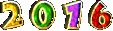
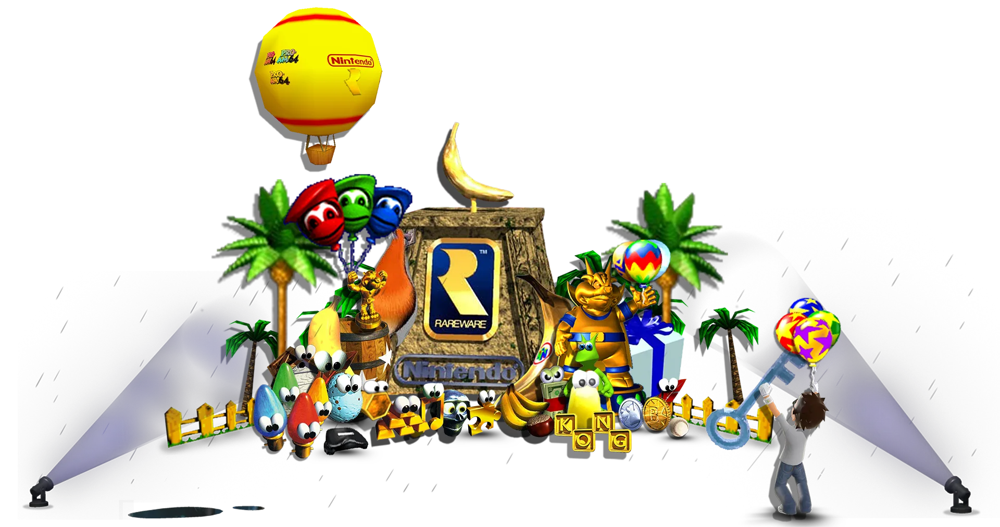

Project Timeline
Follow CyStation’s releases, preservation work, and research by year.
September
August
July
March
- Made this projects page
- Archived Manhunt: The Search for Sickamore - .WAV rip from CD
- Researching website archiving - stay tuned...
August
- Xbox 360 Homebrew Implementation of Ninja Gaiden (2004) Hurricane Packs
March
- iQue Player Research
- Made an account here the day after ^
November
- Experimenting with Animal Crossing memory card tools
August
July
- Celebrated the lifetime and closure of the Xbox 360 Marketplace
- Sideloading Infinity Blade
June
- Began uploading "Manhunt: The Search for Sickamore" mp3 rips
May
- Satellaview archiving
July
- Released "Legalize Melee" modpack
- Archived Dairantou Smash Bros DX Gold Disc
- Improved video editing skills
May
- First original upload to the Internet Archive - Ninja Gaiden 2004 Japanese Demo Disc
March
- Learned OG Xbox Homebrew
February
- Learned how to make custom N64 boxart
- Made "The Legend of Zelda: The Ocarina of Time with Triforce% Quest" custom box art
November
- Researched SSBM modding updates
April
- Wrote first speedrunning guide – for Touhou Luna Nights
2019
August
March
- Learned how to run a modded Halo: Combat Evolved server
2018
Overall
- DIO Doom Mod — Anime Voice ver. 2
- DIO Doom Mod — Taunt and Music addons
January
- Made a tutorial on jailbreaking your Wii

Overall
- Researched Super Smash Bros. Melee modding
September
- Researched Super Smash Bros. Brawl modding
